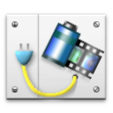

|
4DPop implémente une palette affichée dans le mode développement. Cette palette s'enrichit d'outils au fur et à mesure de l'installation de composants compatibles. |
| 1. | Créez un dossier "Components" à côté du fichier de structure de votre base (".4db") |
| 2. | Placer le dossier "4DPop.4dbase"* ou un alias de ce dernier dans le dossier "Components" |
| 3. | Ouvrez votre base. |
| 4. | Dans la méthode base "Sur ouverture", tapez "Install 4DPop" puis la touche tabulation. Le code ci-dessous est automatiquement inséré dans la méthode.
|
| 5. | Redémarrez votre base, la palette s'affiche lorsque vous êtes en mode développement en bas à gauche de l'écran. |
*Sur Macintosh le composant est un package dont l'extension ".4dbase" n'est pas obligatoirement visible en fonction des réglages de vos préférences d'affichage.
L'aide de 4DPop est disponible dans le menu "Aide" de la base en cours de développement ou en cliquant sur l'icône "i" de la palette.
Si la palette est présentée fermée, vous pouvez l'ouvrir en tirant sur la poignée.

Si vous double-cliquez sur la poignée de la palette fermée, celle-ci se déploie en ajustant sa taille au nombres d'outils présent. Un double clic sur la poignée de la palette ouverte la referme.
Si aucun composant compatible n’est installé, la palette déployée affiche une image

Si un ou plusieurs composants compatibles sont installés, ils apparaissent sous la forme de boutons.
Vous pouvez déplacer la palette par sa barre de titre, la placer à droite ou à gauche de l'écran. La position de la palette est mémorisée.
Un menu contextuel est accessible sur la barre de titre de la palette. Il reprend l'ensemble des outils chargés et des options d'affichage de la palette.
Les composants sont chargés par ordre alphabétique : Pour forcer un composant à être chargé en premier (le plus à gauche) vous pouvez préfixer le nom du dossier avec "01" par exemple.
Placez un ou plusieurs composants compatibles* ou alias dans le dossier "Components" de votre base et relancez là pour accéder aux nouveaux outils disponibles dans la palette.
Les composants disponibles sont :
 4DPop Bookmarks 4DPop Bookmarks |
Accéder rapidement à une page, un e-mail, un fichier, un dossier, un serveur... le tout à portée de souris directement dans votre environnement de développement. Gérez votre liste de favoris par glisser-déposer. |
 4DPop Constants Editor 4DPop Constants Editor |
Créez et éditez vos jeux de constantes personnalisés, dans un éditeur dédié. Utilisez-les immédiatement dans vos méthodes 4D. |
 4DPop Image buddy |
Cet outil permet la gestion des images situées dans le dossier "Resources" de la base en cours de développement ou de l'un de ses sous-dossier. Une commande permet d'extraire les ressources cicn, PICT & MASK et de les transformer en fichier images png dans le dossier "Resources" de votre base. De même les images de la bibliothèques peuvent êtres automatiquement exportées vers le dossier "Resources" ou un de sses sous-dossier. |
 4DPop Migration 4DPop Migration |
Des outils destinés à migrer en douceur vers la v11 SQL :
|
 4DPop Commands 4DPop Commands |
Retrouver une commande par un mot clef en Français ou en Anglais, accéder par double clic à sa documentation en ligne ou bien faire glisser la commande dans l'éditeur de méthodes |
 4DPop Rulers 4DPop Rulers |
Afficher une règle et des guides à l'écran pour faire des mesures précises, en mode application et en mode développement, simuler une taille d'écran et ainsi de soigner son interface "au pixel près". |
 4DPop Color Chart 4DPop Color Chart |
Choisir précisément une couleur d'avant ou d'arrière plan sans quitter votre environnement de développement et ceci grâce à des palettes professionnelles (RGB, HSL, etc.). Générer le code source correspondant par simple glissé déposé dans l'éditeur de méthode. |
 4DPop sqlSchemas 4DPop sqlSchemas |
4DPop sqlSchemas permet de définir graphiquement les schémas SQL utilisés au cours des connexions externes (ODBC, SQL Pass Trough, 4D for Flex, ...). Les schémas sont appliqués lors de l'exécution de lla méthode base sur authentification SQL. |
 4DPop Window 4DPop Window |
Un menu fenêtre hiérarchisé et organisé qui reprend les fenêtres du mode développement et celles du mode application. Ranger ses fenêtres ou récupérer une fenêtre hors écran. |
 4DPop XLIFF 4DPop XLIFF |
Gérer et éditer les fichiers xliff de votre base, faire glisser les références de texte directement dans l'éditeur de méthodes ou l'éditeur de formulaires. Une commande permet d'importer des ressources STR# dans vos fichier xliff. |
* Reportez vous à l'aide du composant 4DPop pour savoir comment créer des composants compatibles.
Ces composants sont fournis en version compilée, mais vous trouverez le code source dans le dossier "SOURCES" à l'intérieur du dossier de chaque composant.
Visitez le forum dédié à 4DPop : Forum 4DPop